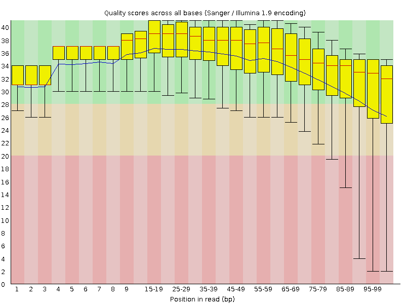
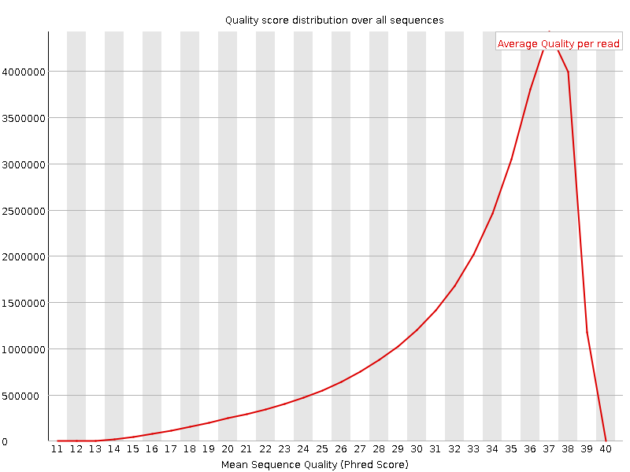
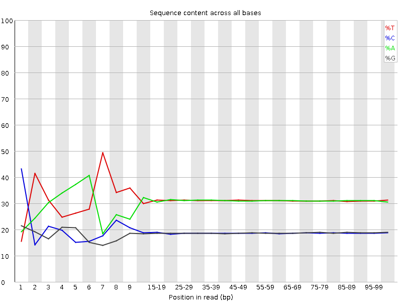
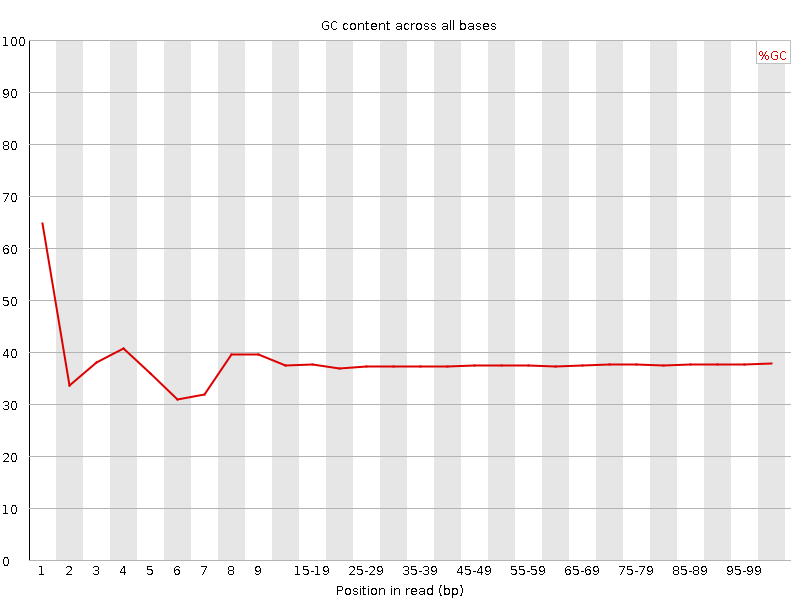
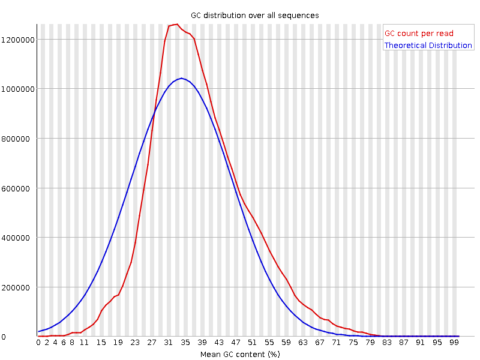
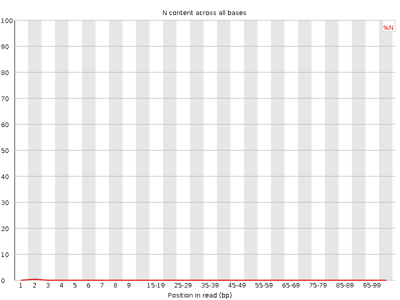
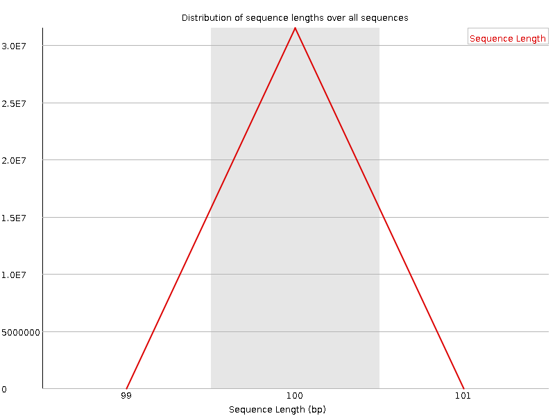
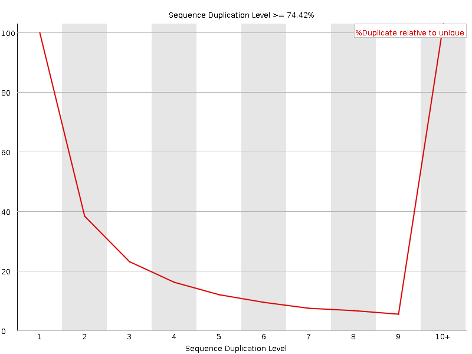
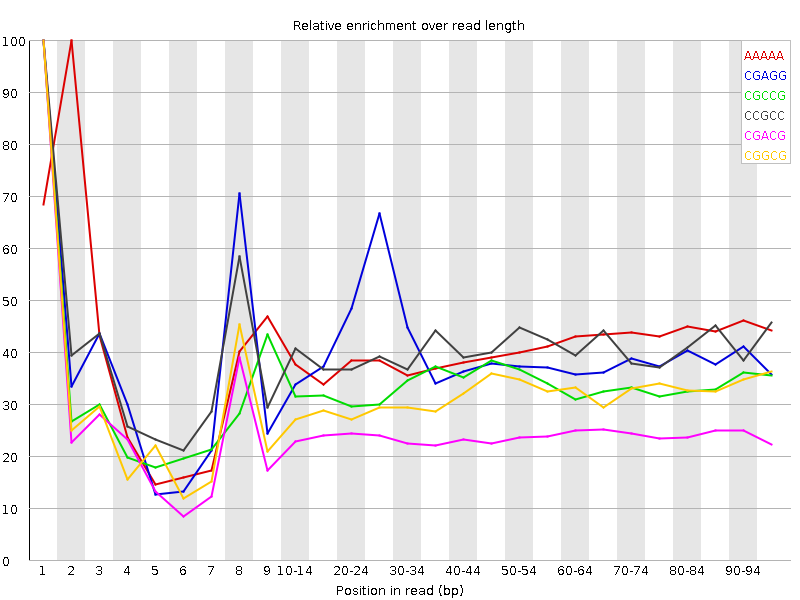

![[OK]](Icons/tick.png) Basic Statistics
Basic Statistics
| Measure | Value |
|---|---|
| Filename | t5_2.fq |
| File type | Conventional base calls |
| Encoding | Sanger / Illumina 1.9 |
| Total Sequences | 31488264 |
| Filtered Sequences | 0 |
| Sequence length | 100 |
| %GC | 37 |
Per base sequence quality

Per sequence quality scores

![[FAIL]](Icons/error.png) Per base sequence content
Per base sequence content

Per base GC content

![[WARN]](Icons/warning.png) Per sequence GC content
Per sequence GC content

Per base N content

Sequence Length Distribution

Sequence Duplication Levels

Overrepresented sequences
| Sequence | Count | Percentage | Possible Source |
|---|---|---|---|
| CTAATTTTCATCTTAATTCAACATCGAGGTCGCAAACATCTTTATCTATA | 69565 | 0.220923579654947 | No Hit |
| CTTTCGTACAATTAATTAATATTTTATTATAGATAGAAACCAATCTGACT | 57160 | 0.18152794958782104 | No Hit |
Kmer Content

| Sequence | Count | Obs/Exp Overall | Obs/Exp Max | Max Obs/Exp Position |
|---|---|---|---|---|
| AAAAA | 20021850 | 2.3166938 | 5.695062 | 2 |
| CGAGG | 2552830 | 2.171062 | 5.435505 | 1 |
| CGCCG | 1570470 | 2.1472137 | 6.379107 | 1 |
| CCGCC | 1513620 | 2.0414243 | 5.03851 | 1 |
| CGACG | 2386015 | 2.0016782 | 8.200092 | 1 |
| CGGCG | 1427380 | 1.9784019 | 6.236173 | 1 |
| CGCGG | 1319895 | 1.8294237 | 6.5149255 | 1 |
| TCGAG | 3408510 | 1.7411635 | 5.050483 | 7 |
| CTCGA | 3310655 | 1.6682442 | 8.375184 | 1 |
| CGCGA | 1988180 | 1.6679262 | 6.3894935 | 1 |
| CTGGA | 3147235 | 1.6076967 | 6.6625113 | 1 |
| CGCCA | 1907005 | 1.5781335 | 5.9564195 | 1 |
| CTTCC | 3193340 | 1.5752158 | 5.077124 | 1 |
| CGATC | 3109645 | 1.566955 | 5.235906 | 4 |
| CGCGC | 1145890 | 1.56671 | 5.3913155 | 1 |
| CTCCA | 3118580 | 1.5501488 | 6.9632344 | 1 |
| ATCGA | 5005455 | 1.5476214 | 5.372054 | 6 |
| CCGGC | 1128415 | 1.5428175 | 5.6168327 | 1 |
| CGAGA | 2970715 | 1.5291762 | 5.127538 | 1 |
| CAAAA | 7877950 | 1.4856011 | 5.036747 | 1 |
| CTTTC | 4888550 | 1.4683472 | 6.597921 | 1 |
| CTTTT | 8016075 | 1.4661024 | 5.9268208 | 1 |
| CTTCG | 2868370 | 1.4343637 | 5.9965754 | 1 |
| CTCGC | 1737035 | 1.4265232 | 6.5629783 | 1 |
| CGAAG | 2759875 | 1.4206463 | 5.0170627 | 1 |
| CTCGT | 2810705 | 1.4055275 | 6.9156923 | 1 |
| CTGGC | 1675100 | 1.3945696 | 5.0310507 | 1 |
| CTTCA | 4497275 | 1.3611933 | 5.1885357 | 1 |
| CTCGG | 1630945 | 1.3578094 | 7.827641 | 1 |
| CGCGT | 1614215 | 1.3438812 | 5.1623483 | 1 |
| CGAAA | 3975335 | 1.2385585 | 5.185112 | 1 |
| CTTGG | 2416780 | 1.2251534 | 5.65946 | 1 |
| CTTTG | 3944305 | 1.2010151 | 5.607331 | 1 |